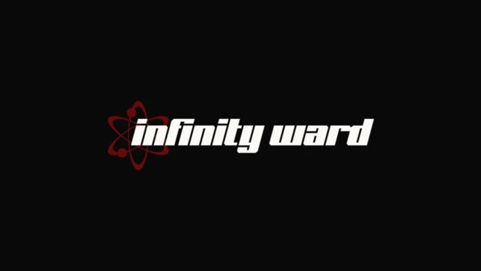

Infinity Ward
Fundação: Maio de 2002
Sede: Encino, Los Angeles, Califórnia, EUA
Fundador: Vince Zampella, Jason West, Grant Collier
Atuais donos: Activision
Países que opera: Atuação Global
O que oferece: Desenvolvedora de games
Call of Duty é um dos nomes mais conhecidos no mundo dos games e principal representante do gênero de shooter militar em primeira pessoa. Mas saiba que o sucesso magnífico dessa franquia não é à toa, pois contou com toda a experiência do time da Infinity Ward. Fundada por três ex-companheiros que trabalharam em Medal of Honor, o que não faltava era conhecimento do gênero. Isto,junto da parceria com a Activision, permitiu à Infinity Ward colocar no mercado um clássico instântaneo e abrir caminho para décadas de uma parceria recheada de sucessos. No entanto, como não podia deixar de ser, não faltaram polêmicas nesta relação. Brigas permeiam a história entre as duas empresas, causando demissões, processos e mudanças no desenvolvimento dos jogos. Apesar disso, a importância da desenvolvedora dentro da sua empresa mãe não diminui. Hoje, a Infinity Ward é peça chave para a Activision e os times de desenvolvimento de seu principal título, participando não apenas da criação dos jogos, mas também das engines que as viabilizam.
Quando a Infinity Ward foi fundada?
A desenvolvedora de jogos Infinity Ward surgiu em maio de 2002 pelos três ex-companheiros de 2015 Inc. LLC Jason West, Vince Zampella e Grant Collier. Todos trabalharam no desenvolvimento de Medal of Honor: Allied Assault para a Electronic Arts, lançado neste mesmo ano. Apesar de trabalharem em uma franquia forte da empresa, eles decidiram sair da 2015 pois estavam insatisfeitos com o contrato com ela. Então, junto de outros 22 funcionários da 2015 Inc, o trio criou a Infinity Ward. Para viabilizar o projeto, eles contataram a Activision, que aceitou a proposta e financiou o estúdio para que desenvolvesse o primeiro jogo de uma nova franquia, Call of Duty, que concorreria justamente com Medal of Honor. Inicialmente a Activision colocou 1,5 milhão de dólares no estúdio por 30% da empresa. O jogo ficou mais de um ano em desenvolvimento, e saiu em outubro de 2003. No mesmo dia de seu lançamento a Activision agiu e comprou o restante da Infinity Ward, a tornando assim uma subsidiária. Seu jogo de estréia foi um enorme sucesso e abriu caminhos para uma longa e fortuita parceria entre as empresas.
Sequência de Call of Duty

Call of Duty 2 começou a entrar em desenvolvimento logo em seguida, desta vez utilizando uma engine da própria desenvolvedora, chamada de IW 2.0. Isto logo se tornaria a norma entre os times de Call of Duty, com a Infinity Ward criando então a engine que iria utilizar em cada geração do jogo. O segundo jogo foi um sucesso ainda mais estrondoso, provando que a franquia estava no caminho para o sucesso. Call of Duty 2 saiu juntamente com o Xbox 360, e levou a franquia para os consoles. A partir de então a Activision colocou o time da Infinity Ward para focar no desenvolvimento de uma nova engine e no quarto jogo, enquanto o terceiro ficou nas mãos da Treyarch, outro estúdio interno. Assim, Infinity Ward começou a criação da engine IW 3.0 e, posteriormente, do jogo Call of Duty 4: Modern Warfare, lançado em 2007. Com o sucesso desta entrada o jogo ganhou status de subsérie. Os próximos anos dariam luz às sequência Modern Warfare 2 (2009) e Modern Warfare 3 (2011), feito em conjunto com a Sledgehammer Games.